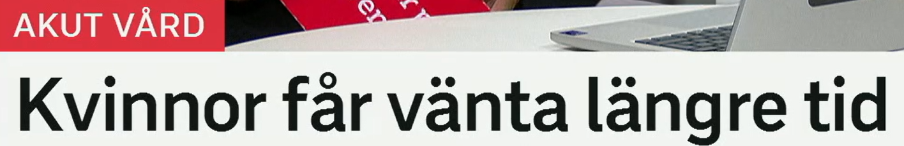
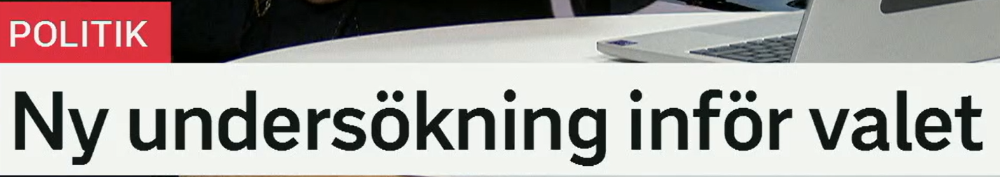
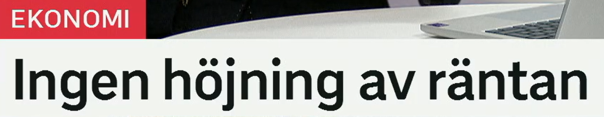
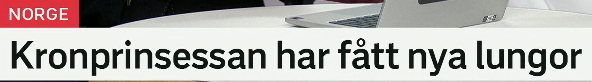
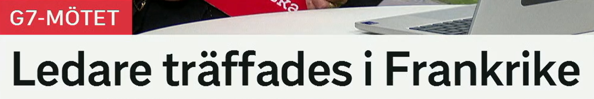
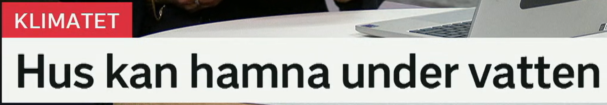
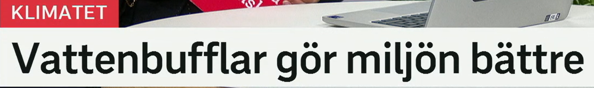

Kvinnor får vänta längre tid
女性需要等待更长时间。
en kvinna 女性；复数 kvinnor。对比 män 男性，patienter 病人。
相关词：kvinnliga patienter 女性病人，män 男性，jämlik vård 平等医疗。
Kvinnor söker vård senare än män. 女性比男性更晚寻求医疗。
få 在这里表示“不得不/被迫/需要”；vänta 等待。
近义表达：måste vänta 必须等待，tvingas vänta 被迫等待，står i kö 排队。
Patienter får vänta på akuten. 病人在急诊需要等待。
lång 长的；比较级 längre 更长。längre tid = 更长时间。
近义表达：mer tid 更多时间，längre väntetid 更长等待时间，tar längre tid 花更长时间。
Undersökningen tar längre tid än väntat. 检查比预期花更久。
等待时间句型
X får vänta längre tid = X 需要等更久。医疗新闻中也常说 längre väntetider。

Ny undersökning inför valet
选举前的新调查。
en undersökning 调查、研究、检查。政治语境里常指民调或调查。
近义词：mätning 民调/测量，enkät 问卷，studie 研究，utredning 调查/审查。
En ny undersökning visar ökat stöd. 一项新调查显示支持率上升。
inför 作介词时表示“在……之前、面对……”。注意它也可以是动词 införa 的现在时“引入”。
近义表达：före 在……之前，innan 在……前，inför valet 选前。
Partierna kampanjar inför valet. 各党在选前进行竞选活动。
ett val 选举/选择；valet 这次选举。相关词：rösta 投票，väljare 选民，valkampanj 竞选活动。
Många väljare bestämmer sig sent. 许多选民很晚才决定。
选前报道
Ny undersökning inför valet 可扩展为：En ny undersökning har gjorts inför valet.

Ingen höjning av räntan
不提高利率。
ingen/inget/inga 表示没有。höjning 是 en 词，所以用 ingen。
近义表达：ingen förändring 没有变化，oförändrad 不变的，lämnas oförändrad 保持不变。
Det blir ingen höjning i år. 今年不会上调。
来自动词 höja 提高、上调。en höjning 是上调、提高。
近义词：ökning 增加，uppgång 上升，höjt läge 提高后的水平。反义：sänkning 下调。
Hyresgästerna protesterar mot höjningen. 租户抗议涨价。
en ränta 利率、利息；räntan 这项利率。相关词：styrränta 政策利率，bolåneränta 房贷利率。
相关表达：höja räntan 加息，sänka räntan 降息，räntan ligger kvar 利率保持不变。
Riksbanken sänker räntan. 瑞典央行降息。
经济标题
Ingen höjning av X = X 不上调。可以替换成 ingen sänkning 不下调。

Kronprinsessan har fått nya lungor
王储妃已经获得新肺。
原形 få 获得、得到；har fått 表示“已经获得/已经接受”。医疗语境中常用于治疗或器官移植。
近义表达：har fått behandling 已接受治疗，har genomgått 已经历/接受，har opererats 已手术。
Patienten har fått ny behandling. 病人已经接受新治疗。
en lunga 肺；复数 lungor。nya lungor 在这里可理解为肺移植后的新肺。
相关词：lungtransplantation 肺移植，organ 器官，donator 捐赠者，operation 手术。
En transplantation kan rädda liv. 移植可以挽救生命。
en kronprinsessa 王储妃/女王储；定形 kronprinsessan。
相关词：kungafamiljen 王室，kronprins 王储，prinsessa 公主。
医疗完成时
har fått nya lungor 是完成时，强调治疗结果已经发生。

Ledare träffades i Frankrike
领导人在法国会面。
en ledare 领导人、负责人。政治语境里常指国家或组织领导人。
相关词：statschef 国家元首，regeringschef 政府首脑，partiledare 党魁，chef 负责人。
Världens ledare möts i dag. 世界领导人今天会面。
原形 träffas 会面、见面。träffades = 会面了。
近义词：möttes 会面，samlades 聚集，höll möte 开会，förhandlade 谈判。
Ministrarna träffades i Paris. 部长们在巴黎会面。
ett möte 会议；G7-mötet 七国集团会议。
相关词：toppmöte 峰会，ministermöte 部长会议，delegation 代表团。
会议报道
Ledare träffades i X = 领导人在 X 会面。也可说 Ledare möttes i X.

Hus kan hamna under vatten
房屋可能被淹/落入水下。
hamna 表示最终落到某处、陷入某种状态；kan hamna = 可能会陷入/落入。
近义表达：riskerar att hamna 有……风险，kan bli 可能变成，kan drabbas av 可能遭受。
Området kan hamna under vatten. 该地区可能被水淹没。
under 在……下面；vatten 水。under vatten = 在水下/被水淹。
相关表达：översvämmas 被淹，drabbas av översvämning 遭遇洪水，höjda havsnivåer 海平面上升。
Vägarna stod under vatten. 道路被水淹了。
ett hus 房子；复数也常是 hus。
相关词：bostad 住房，byggnad 建筑，hem 家。
风险表达
X kan hamna under vatten = X 可能被淹。新闻里也常说 X riskerar att översvämmas。

Vattenbufflar gör miljön bättre
水牛让环境变得更好。
en vattenbuffel 水牛；复数 vattenbufflar。
相关词：betesdjur 放牧动物，boskap 牲畜，naturvård 自然保护。
Betesdjur kan hålla landskapet öppet. 放牧动物可以保持景观开阔。
göra 做、使；gör miljön bättre = 使环境更好。
近义表达：förbättrar 改善，gynnar 有利于，bidrar till 促成，stärker 加强。
Åtgärderna förbättrar miljön. 这些措施改善环境。
en miljö 环境；miljön 这个环境/自然环境。
相关词：natur 自然，ekosystem 生态系统，biologisk mångfald 生物多样性。
改善表达
X gör Y bättre = X 使 Y 变得更好。更书面可用 X förbättrar Y。
复习表：重点词 + 近义词 + 高频用法
| 关键词 | 近义/相关词 | 高频搭配 |
|---|---|---|
| vänta | stå i kö, tvingas vänta, väntetid | får vänta, vänta längre tid, lång väntetid |
| undersökning | mätning, enkät, studie, utredning | ny undersökning, undersökning inför valet |
| ränta | styrränta, bolåneränta, höjning, sänkning | höja räntan, sänka räntan, ingen höjning |
| träffas | möts, samlas, håller möte, förhandlar | ledare träffades, ministrar möts, toppmöte |
| hamna | riskera, drabbas av, hamna i, hamna under | hamna under vatten, hamna i problem |
| förbättra | göra bättre, gynna, bidra till, stärka | förbättra miljön, göra miljön bättre |
练习 1
把“病人需要等待更久”译成瑞典语。提示：Patienter får vänta längre tid.
练习 2
说“没有加息”。提示：Ingen höjning av räntan.
练习 3
把“领导人在法国会面”译成瑞典语。提示：Ledare träffades i Frankrike.
练习 4
用 gör ... bättre 写“这些措施让环境更好”。提示：Åtgärderna gör miljön bättre.